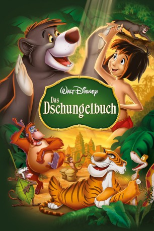

Alternativ: The Jungle Book
Auszeichnungen: für 1 Oscars nominiert gesehen am 02.01.2017
gesehen am 02.01.2017
 
 IMDB-Wertung: 7.6 / 10
IMDB-Wertung: 7.6 / 10  Metascore:
Metascore: 
Der kleine Mogli, der bislang im Dschungel aufgewachsen ist, macht sich mit Baghira, dem schlauen Panther, auf den Weg zur Menschensiedlung. Unterwegs trifft er den swingenden King Louie, die hypnotische Schlange Kaa und den liebenswerten, unbekümmerten Bären Balu, der Mogli die gemütlichen Seiten im Leben zeigt und ihm beibringt, was wahre Freundschaft bedeutet. Doch Shir Khan, der Tiger, ist ihnen bereits auf der Spur.
Jahr: 1967
Dauer: 78 Minuten
FSK: 0
Land: USA Studio: Buena Vista Distribution CompanyTonspuren: DTS - ,
Untertitel: Deutsch,
Auflösung: 1080p (1888x1080) Größe: 4792 MB
Genre: Abenteuer, Animation/Trick, Familie, Musical
Regisseur: Wolfgang Reitherman
Drehbuch: Larry Clemmons, Ralph Wright, Ken Anderson, Vance Gerry, Rudyard Kipling
Soundtrack: George Bruns
Darsteller:
 Sebastian Cabot als 'Bagheera' the Panther
Sebastian Cabot als 'Bagheera' the Panther George Sanders als Shere Khan the Tiger
George Sanders als Shere Khan the Tiger Sterling Holloway als 'Kaa' the Snake
Sterling Holloway als 'Kaa' the Snake J. Pat O'Malley als Col. Hathi the Elephant / Buzzie
J. Pat O'Malley als Col. Hathi the Elephant / Buzzie Verna Felton als Elephant
Verna Felton als Elephant Clint Howard als Elephant
Clint Howard als Elephant Hal Smith als Slob Elephant / Monkey , uncredited
Hal Smith als Slob Elephant / Monkey , uncredited Ben Wright als Wolf
Ben Wright als WolfDatei: X:\Kinder Disney HD\Dschungelbuch\Dschungelbuch, Das (1967, FSK0, 1888x1080).mkv seit 03.12.2015
Festplatte: Kinder-Filme+Trick
 Es gibt insgesamt 7 Filme in der Gruppe 'Kinder Disney HD\Dschungelbuch'
Es gibt insgesamt 7 Filme in der Gruppe 'Kinder Disney HD\Dschungelbuch'